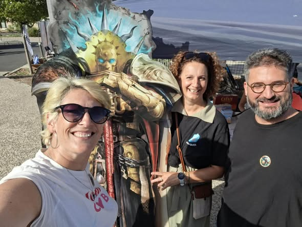
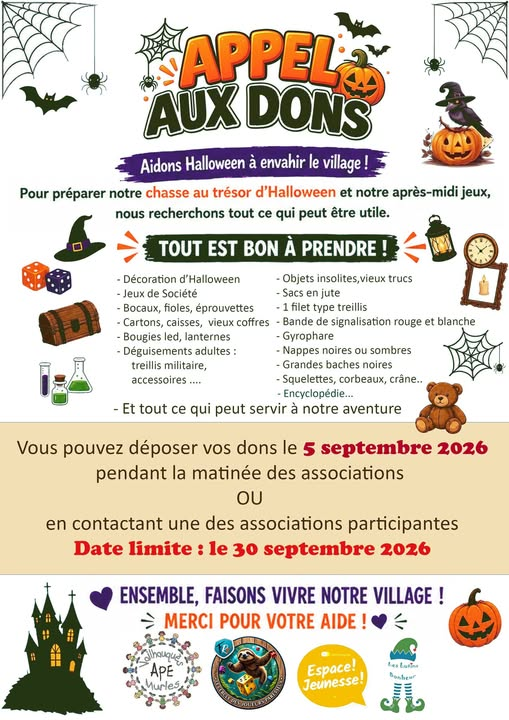
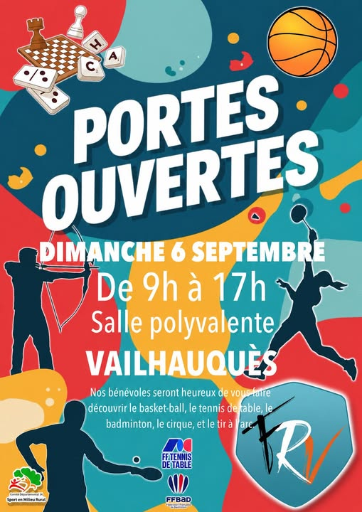
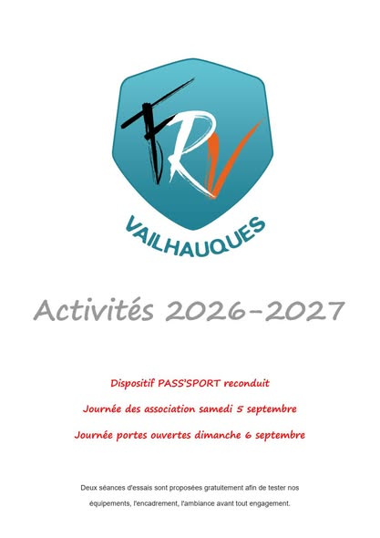
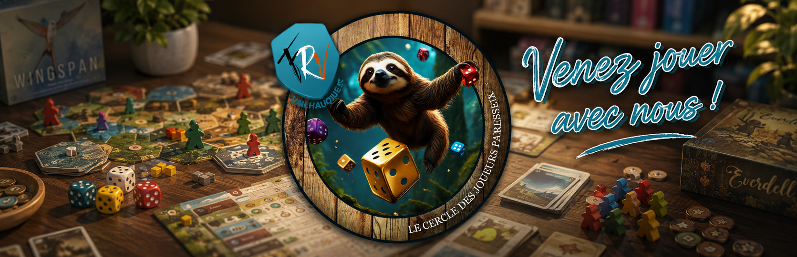

5 septembre 2026
On vous attend à la journée des assos !
Vie du club
On vous attend à la journée des assos ! À Vailhauquès et à Montarnaud ! … En +3
Lire l'articleLa vie du club
Archives des publications du Cercle des Joueurs Paresseux.

5 septembre 2026
Vie du club
On vous attend à la journée des assos ! À Vailhauquès et à Montarnaud ! … En +3
Lire l'article
3 septembre 2026
Vie du club
HALLOWEEN SE PRÉPARE ! Ça … En Les Lutins Bonheur 1 j ·
Lire l'article
29 août 2026
Vie du club
Et Après la journée des assos, on oublie pas la journée portes Ouvertes ! Foyer Rural de Vailhauquès
Lire l'article
27 août 2026
Vie du club
+8 Foyer Rural de Vailhauquès 13 août à 12:22 · Nous sommes ravis de vous présenter notre livret des activités pour la saison 2026-2027.
Lire l'article25 juillet 2026
Jeux de société
Le Cercle des Joueurs Paresseux a désormais son site Internet ! C'est une étape importante pour nous ! Nous avons maintenant un site qui présente les jeux que nous pratiquons, notre fonctionnement et toutes les informations utiles pour venir jouer avec nous à Vailhauquès.…
Lire l'article
23 juillet 2026
Vie du club
a changé sa photo de couverture. 18 juillet à 13:25 ·
Lire l'article22 publication(s) conservée(s).